Әдет-ғұрып – қоғамдық жосық ережелерін дәстүрлі түрде белгілейтін көпшілік мақұлдаған тәртіп.
Дәстүр – бір ұрпақтан екінші ұрпаққа өтетін, өткен ұрпақтардан қалған мұра.
Салт-дәстүр – тұрмыста дәстүрлер көрініс тауып, әдет- ғұрыппен белгіленген әрекеттер.
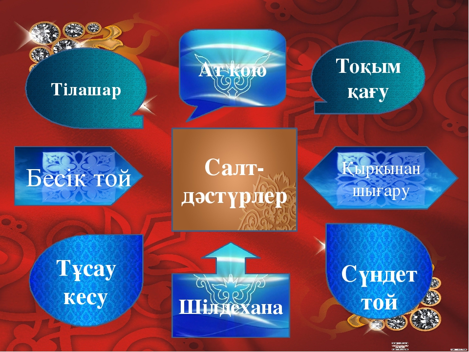
1.Шілдехана.
Баланың шыр етіп дүниеге келуі тек ата-анасының ғана емес, бүкіл ауылдың қуанышы болып есептеледі.Міне, осы күндері оның алғашқы тойы жасалады. Ол тойды шілдехана деп атайды.Оған көбінесе жастар жиналады. Тойға жиналғандар сәбиге ізгі тілектерін білдіріп, ән айтып, ойын ойнап, көңіл көтереді. Шілдехана – баланы жын-шайтаннан қорғап, күзетуден пайда болған дәстүр.
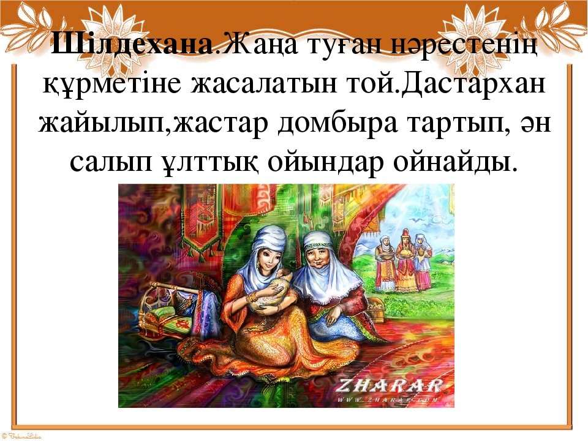
2.Бесікке салу.
Үшінші немесе бесінші күнгі мейрам баланы бесікке салумен байланысты. Ол бесік той деп аталады. Бесік – қасиетті, киелі, құтты мүлік, сәбидің алтын ұясы болып саналады. Жаңа туған баланы бесікке салу да халқымыз үшін елеулі дәстүрлердің бірі.
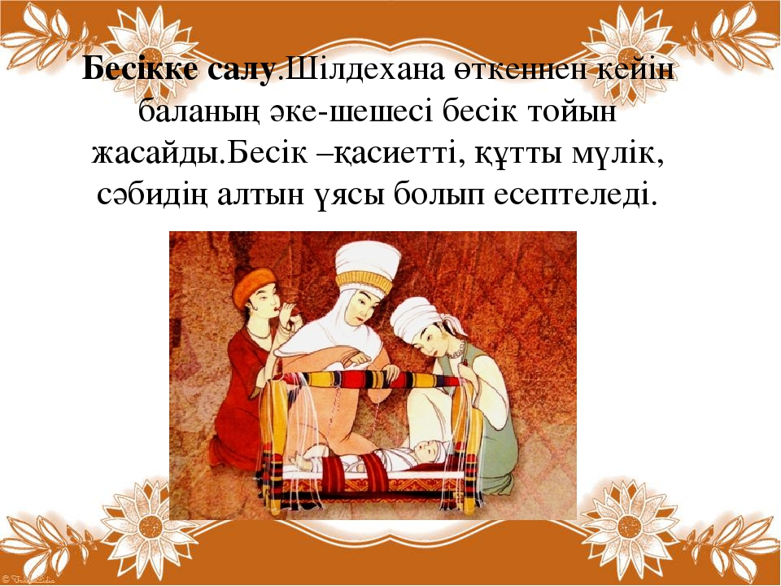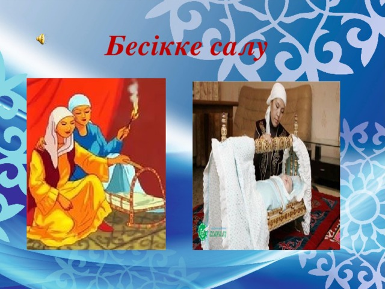
3.Қырқынан шығару.
Қырқыншы күні «қырқынан шықты» салты өткізіледі. Ыдысқа қырық қасық су құйып, баланы шомылдырады. Баланың тырнағы мен шашын бірінші рет алады, сосын оларды әлдекімдер зиянкестік мақсатта қолданбас үшін көміп тастайды.
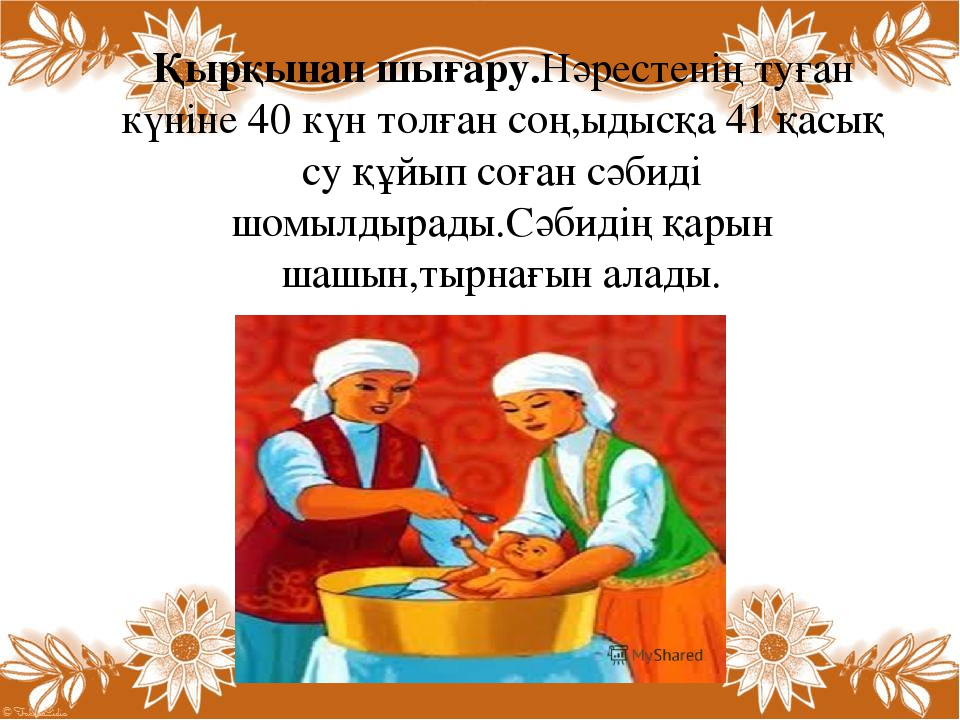
4.«Азан шақыру» – ат қою.
Қазақтар осы бір салтанатты рәсімге ерекше мән береді. Балаға соған ұқсасын деген оймен атақты адамдардың атын қоюға, әдемі аттар беруге тырысады.Сәбиге көз тимей, мықты, әрі күшті болып өссін деген оймен ешбір елеусіз ат қоя салған жағдайлар да болған. Бұрын балаға ол туылған кезде болған оқиғаға байланысты ат қойған. Мысалы, ол наурыз айында туылса, Наурызбай, айт кезінде туылса, Айтбай, боранды күні туылса, Боранбай деп атаған.
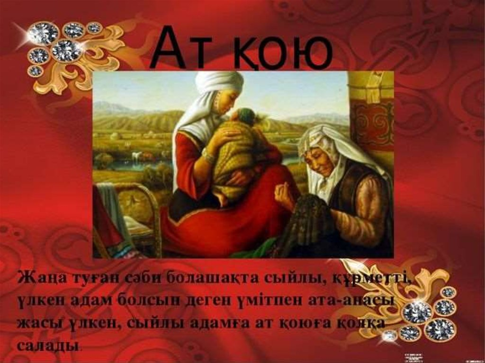
5.Тұсаукесер.
Бұл салт бала енді тәй-тәй басқанда жасалады. Ол үшін арнайы ала жіп дайындалады. Бұл ала жіп аттамасын деген ұғымнан шыққан. Сол жіппен баланың аяғын кәдімгідей тұсап, оны аяғын жылдам басатын адамға кестіреді. Сүріншек, ақырын жүретін адамдарға кестірмейді. Тұсауы кесілген баланы қолынан ұстап тез жүгіртеді, шашу шашылады.
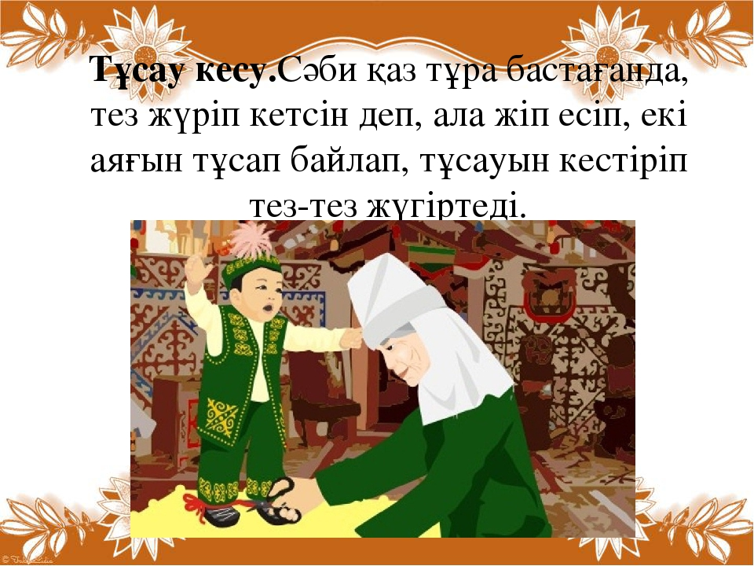
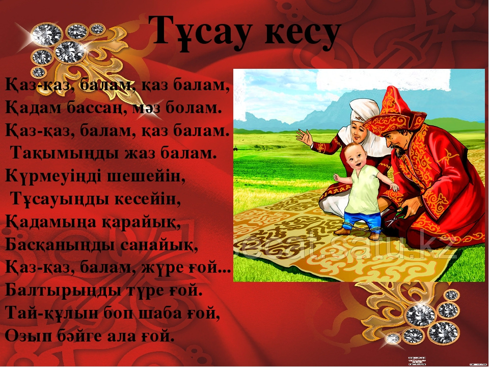
6.Сүндетке отырғызу.
Сүндетке отырғызу араб елдерінен шығып, мұсылман жұртына тараған. Ер баланы сүндетке 3,5,7,9 жаста отырғызады. Сүндетке отырғызу мұсылмандық парыз болып саналады. Бұл балаға ер жетіп азамат болдың деген ойды ұғындырады. Сүндетке отырғызу бала өміріндегі қуанышты кезең болғандықтан «сүндет той» жасайды.
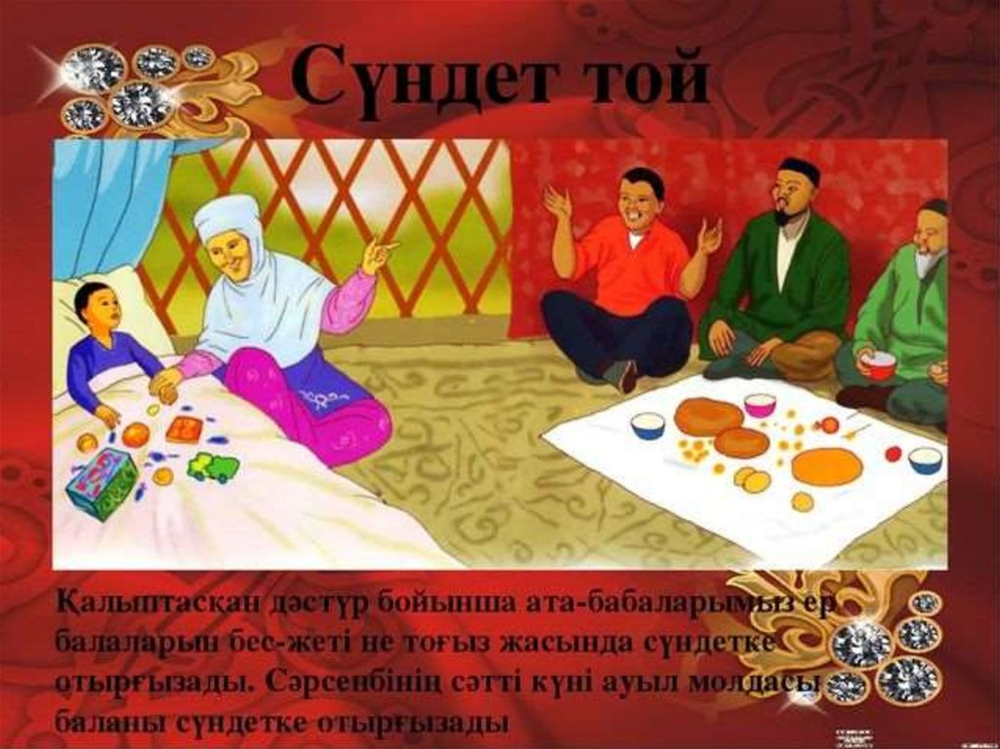
7. Тоқым қағу
Тоқым қағу – баланың туған үйден бірінші жолға шығуына арналған той. Өз бетінше атқа отыруды үйренген бала, туған үйінен алғаш рет алысқа шығады. Оның ата-анасы баласының бірінші рет жолға шығуын ғана емес, үйге аман-есен оралуын да атап өту үшін мал сойып, той жасаған.Бұл тойға ақсақалдарды шақырған. Қонақтар домбыра тартып, ән шырқап, айтыс ұйымдастырып, түрлі ойындар ойнап, көңіл көтереді.
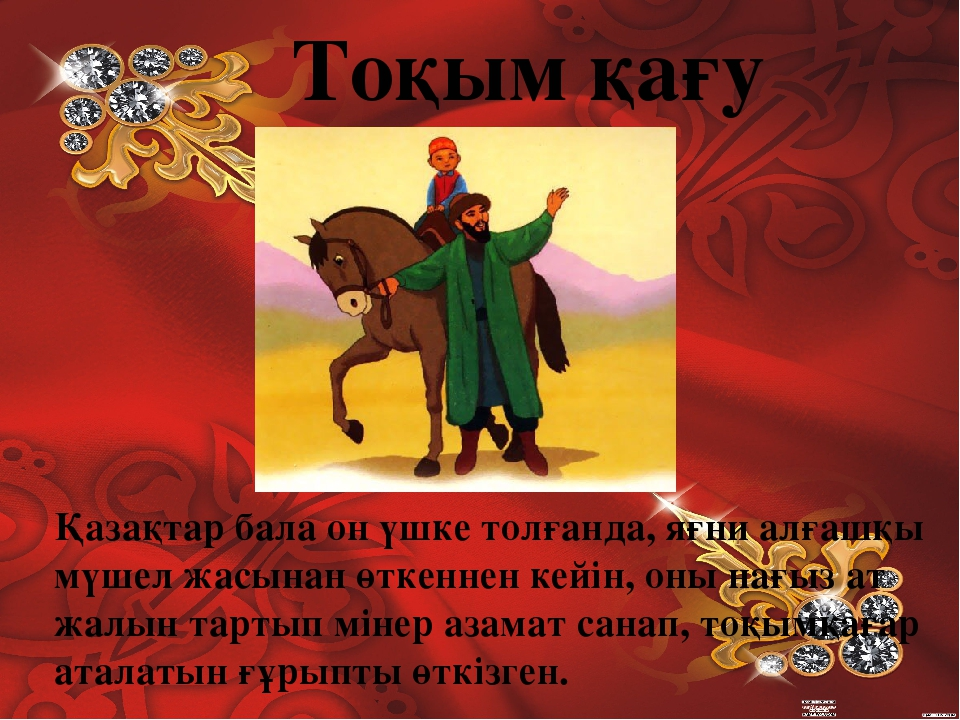
8.Тілашар.
Бала жетіге толғасын, білім алу үшін мектепке барады. Бұл күні баланы ерекше жақсы киіндіріп, мектепке қажетті құралдар ұсынады және шағын той жасайды. Бұл той «тілашар» деп аталады. Үлкендер жағы балаға бата беріп, «ғалым бол, ақын бол... және тағы басқа да» тілектер айтады. Баланың жаңа заттарына байғазы береді. Тәрбиенің мұндай әдісі балаға оған үміт артылғанын, өзінің ержеткенін, ол үшін жаңа әлемнің есігі ашылғанын сезінуге мүмкіндік береді.
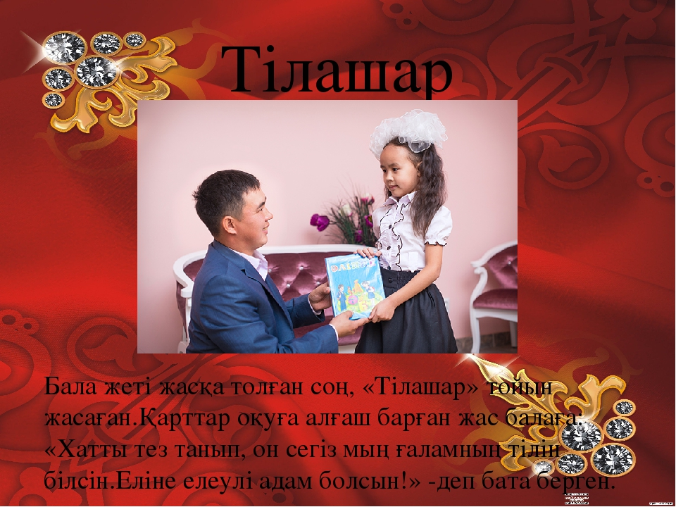
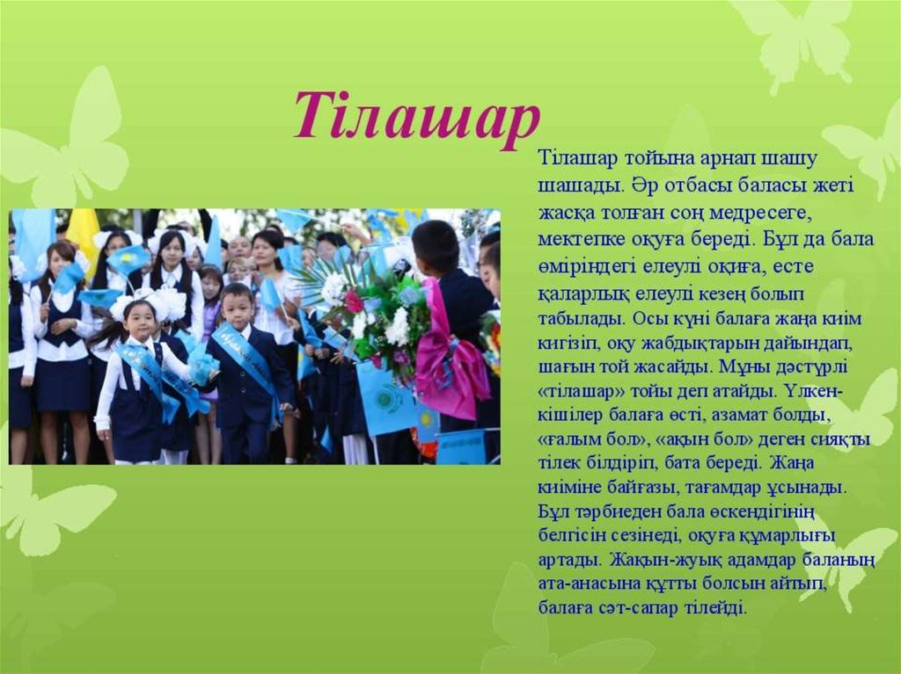